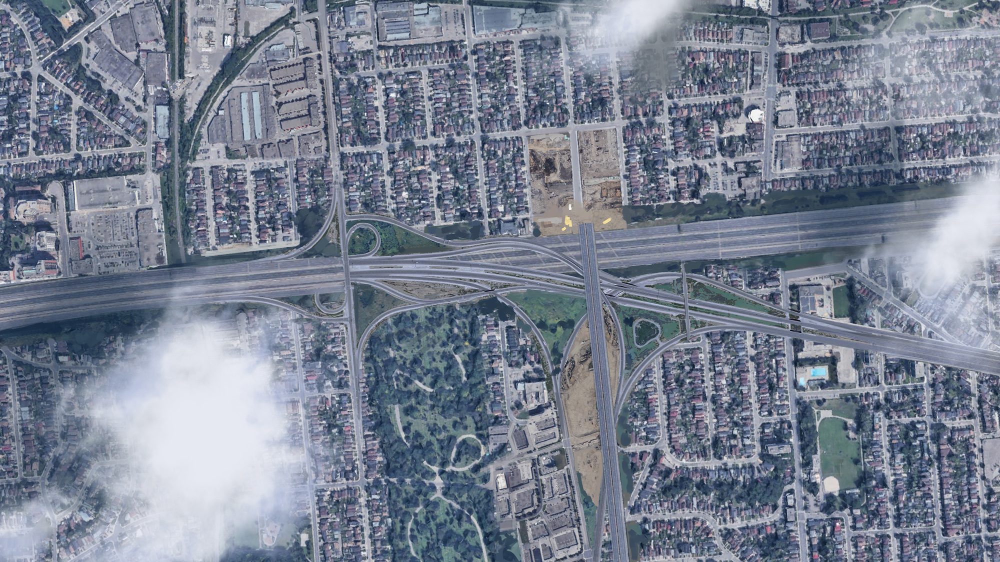
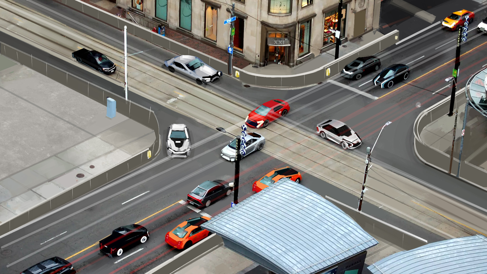
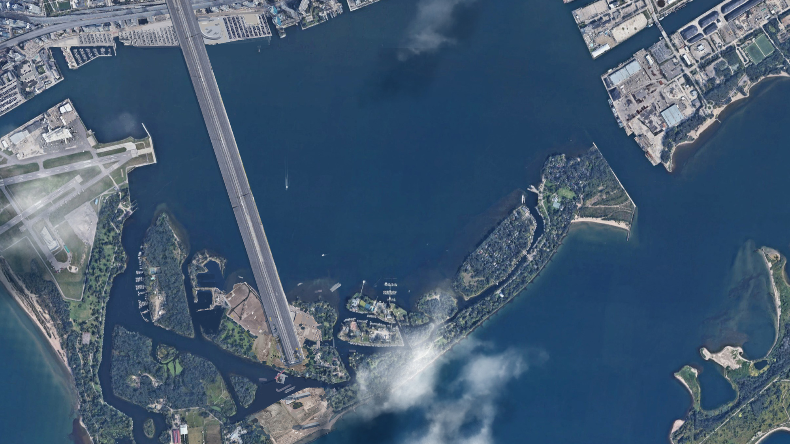
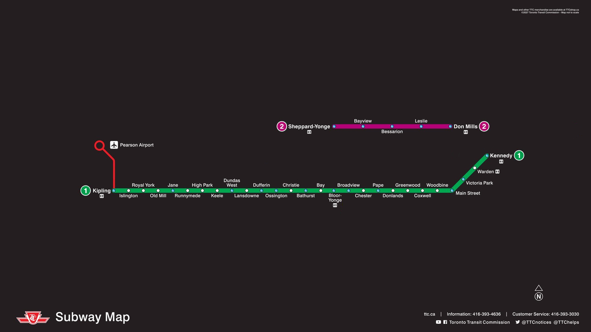

We reflect on 10 years of revitalised transportation development in the nation's largest city.
Jonathan McKant, for The Ontario Mail
Jul 08, 2032
For the casual onlooker nowadays, it can be hard to imagine what life would have been like a mere decade ago in the city of Toronto: a growing city plagued with traffic jams and pollution. With over $50 billion invested in renewed transportation infrastructure, however, such troubles are a distant memory of the past.
Since 2022, the City of Toronto's Transportation Commitment has realised the expansion of all major roads and highways in the region, including the expansion of the Gardiner Expressway to a wide and free 18-lane highway. The expansion of roads and car infrastructure has opened up new economic opportunities for the region.
In a press conference commemorating the start of the programme, Mayor Sonia Johal said, "We're proud of the will of the Toronto people to embrace this new car infrastructure. It's more than just paving more roads and allowing people to live further out, but also about building a new culture for the Toronto people."
Despite, not all are placated by this bold new vision. Residents in North York continue their protests to prevent the expansion of a highway meant to alleviate traffic between the town centres of Toronto and Brampton. However, Mayor Johal dismissed such concerns in the press conference today, stating, "we must think about what is best for the Toronto people."
"The people of Toronto understand that to treat the car as an appliance is inappropriate," she added. "It is about freedom and individuality. When these people speak of car manufacturers 'invading' their lives and 'forcing' them to spend all their time paying off and running their cars, they do not realise the tremendous privilege such a lifestyle gives them. It is freeing."
When asked to respond to reactionaries questioning the city's priorities regarding safety and economic equity, Mayor Johal stated, "we of course have an ongoing commitment to the needs of our more disadvantaged." Johal added that the city of Toronto will continue to stand by its commitment to helping those who may have trouble owning and maintaining a car, such as a $6 billion tax benefit for rideshare services like Uber and Lyft over the next five years.
Concerns of course are abound about the speed and unpredictability of large passenger vehicles, autonomous or not, but the city continues to step up efforts to maintain safety. For instance, since the closure of all pedestrian crossings in the downtown core and the erection of anti-tresspass safety barriers on all roads in 2028, the incidence of driver casualties have dropped by over 30%. "Ensuring that stray pedestrians do not use areas reserved for cars continues to be our utmost priority when it comes to safety," Johal remarked.
Mayor Johal also commented on the ongoing protests of Centre Island, where residents and park-goers continue acts of sabotage since the completion of the Niagara Bypass Viaduct.
"The loss of some trees is of course cause for sorrow for some people, but we must think of the bigger picture. Economies are at stake," she said. "Without the freedom and flexibility of the car, how else will any of us get to work, and get things delivered?"
Increased privatisation of roads and a greater reliance on cars has also been a boon for the city's coffers, as spending on welfare programmes such as public transportation has been cut.
With more people realising the potential of cars, fewer and fewer are relying on government programmes such as the use of buses and trains, a transportation spokesperson told the Mail yesterday. With less money being wasted on these programmes, the government can focus more on boosting the economy by expanding local businesses, in forms such as the ride share company subsidy, they added.
As for environmental concerns, the electrification of cars has been paramount, they said. The Canadian government appears willing to renew its commitment to source ethnically-mined rare earth metals and lithium for the country's growing car manufacturing industry.
Of course, with any long project, not all is done just yet. Toronto sees no sight to the end of this project. According to programme spokespeoperson Adam Kayleigh, its next priority is to secure additional funding and approval for expansion of the Gardiner Expressway, which sees new traffic jams during certain rush hours. "Since its expansion, more and more people are now able to use it as a viable commute route," he told the Mail. "Widening the throughfare further should allow us to alleviate traffic congestion once and for all."
John is a transportation policy expert at The Ontario Mail. He previously worked as a public relations officer for Ford Canada before moving into journalism, and enjoys hiking around the lakes in Alberta.